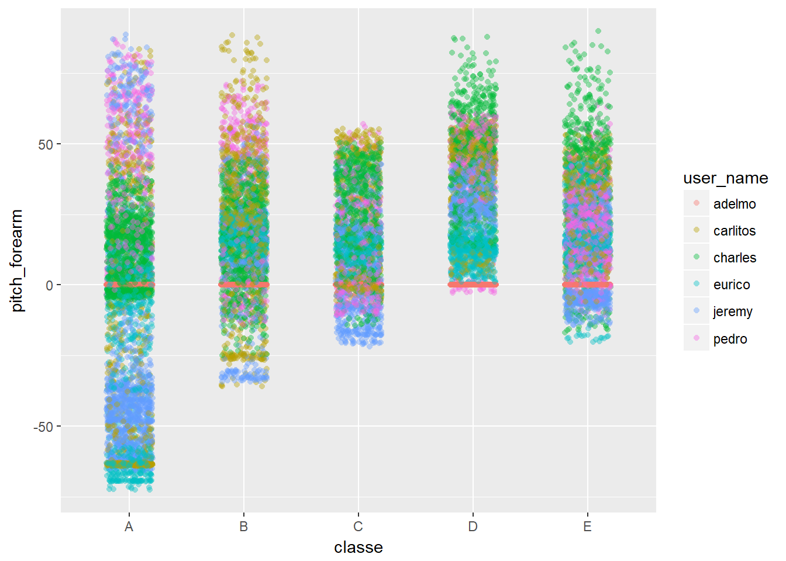
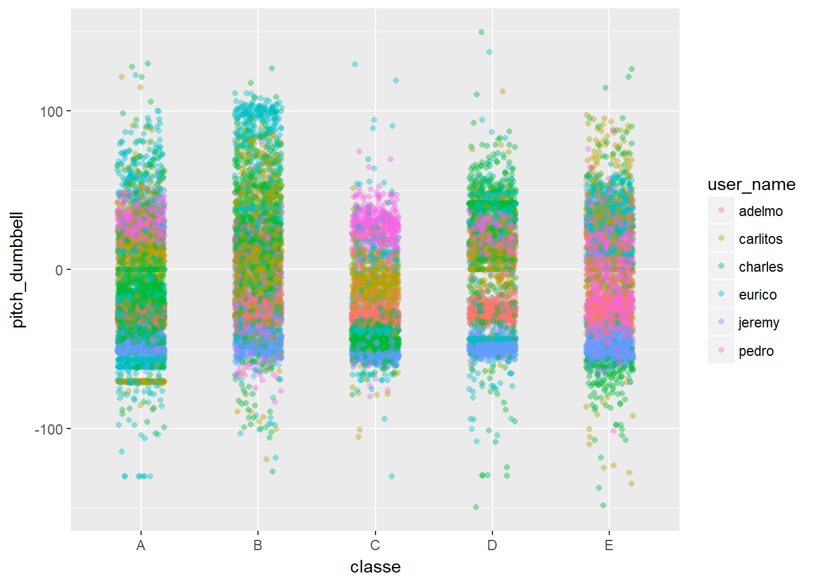
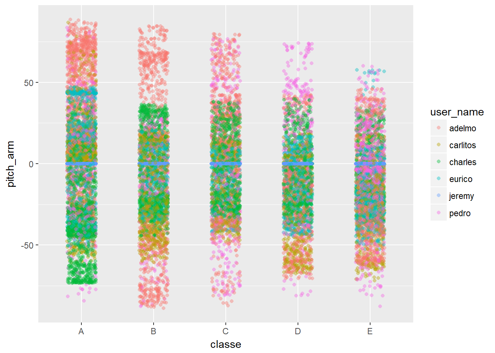
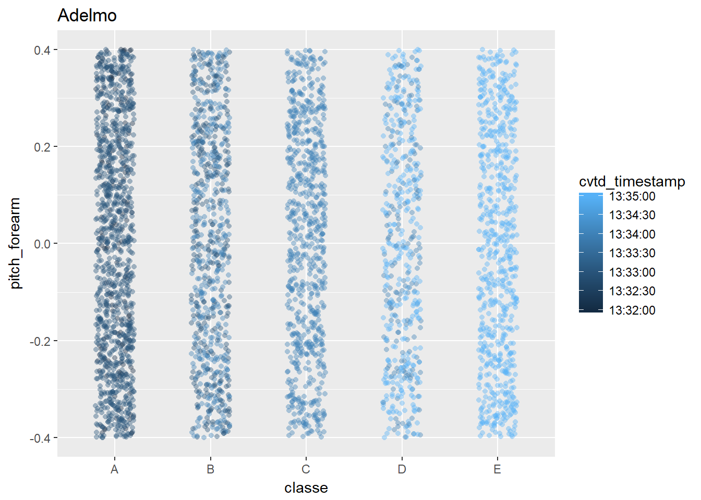

The objective of the project is to create a model which is able to classify the manner in which a unilateral dumbbell bicep curl was performed based on measurements given by three body sensors.
For the study six participants were asked to perform 10 repetitions of Dumbbell Biceps Curl in five different fashions: - exactly according to the specification (Class A), - throwing the elbows to the front (Class B), - lifting the dumbbell only halfway (Class C), - lowering the dumbbell only halfway (Class D) - and throwing the hips to the front (Class E).
Class A corresponds to the specified execution of the exercise, while the other 4 classes correspond to common mistakes.
Data for the study was provided by http://groupware.les.inf.puc-rio.br/har
First load the training and test data sets and libraries used for analysis.
library(readr);
library(ggplot2)
set.seed(9967)
library(caret)
library(rpart.plot)
library(rattle)
pml_training <- read_csv("https://d396qusza40orc.cloudfront.net/predmachlearn/pml-training.csv",
col_types = cols(cvtd_timestamp = col_datetime(format = "%d/%m/%Y %H:%M"),
kurtosis_picth_arm = col_number(),
kurtosis_picth_belt = col_number(),
kurtosis_yaw_arm = col_number(),
kurtosis_yaw_belt = col_number(),
kurtosis_yaw_dumbbell = col_number(),
kurtosis_yaw_forearm = col_number(),
kurtosis_picth_dumbbell=col_number(),
kurtosis_roll_arm=col_number(),
kurtosis_roll_dumbbell=col_number(),
magnet_dumbbell_z=col_number(),
magnet_forearm_y=col_number(),
magnet_forearm_z=col_number(),
amplitude_yaw_dumbbell=col_number(),
skewness_roll_dumbbell=col_number(),
max_yaw_dumbbell=col_number(),
max_yaw_dumbbell=col_number(),
skewness_pitch_dumbbell=col_number(),
skewness_roll_arm=col_number(),
skewness_pitch_arm = col_number(),
skewness_roll_belt.1 = col_number(),
skewness_yaw_arm = col_number(),
skewness_yaw_belt = col_number(),
skewness_yaw_dumbbell = col_number(),
skewness_yaw_forearm = col_number(),
skewness_roll_belt= col_number(),
max_yaw_belt= col_number(),
max_yaw_belt= col_number(),
min_yaw_dumbbell = col_number(),
amplitude_yaw_belt= col_number(),
kurtosis_roll_forearm= col_number(),
kurtosis_picth_forearm= col_number(),
skewness_roll_forearm= col_number(),
skewness_pitch_forearm= col_number(),
max_yaw_forearm= col_number(),
max_yaw_forearm= col_number(),
amplitude_yaw_forearm= col_number(),
kurtosis_roll_belt= col_number()
))
pml_testing <- read_csv("https://d396qusza40orc.cloudfront.net/predmachlearn/pml-testing.csv",
col_types = cols(cvtd_timestamp = col_datetime(format = "%d/%m/%Y %H:%M"),
kurtosis_picth_arm = col_number(),
kurtosis_picth_belt = col_number(),
kurtosis_yaw_arm = col_number(),
kurtosis_yaw_belt = col_number(),
kurtosis_yaw_dumbbell = col_number(),
kurtosis_yaw_forearm = col_number(),
kurtosis_picth_dumbbell=col_number(),
kurtosis_roll_arm=col_number(),
kurtosis_roll_dumbbell=col_number(),
magnet_dumbbell_z=col_number(),
magnet_forearm_y=col_number(),
magnet_forearm_z=col_number(),
amplitude_yaw_dumbbell=col_number(),
skewness_roll_dumbbell=col_number(),
max_yaw_dumbbell=col_number(),
max_yaw_dumbbell=col_number(),
skewness_pitch_dumbbell=col_number(),
skewness_roll_arm=col_number(),
skewness_pitch_arm = col_number(),
skewness_roll_belt.1 = col_number(),
skewness_yaw_arm = col_number(),
skewness_yaw_belt = col_number(),
skewness_yaw_dumbbell = col_number(),
skewness_yaw_forearm = col_number(),
skewness_roll_belt= col_number(),
max_yaw_belt= col_number(),
max_yaw_belt= col_number(),
amplitude_yaw_belt= col_number(),
kurtosis_roll_forearm= col_number(),
kurtosis_picth_forearm= col_number(),
skewness_roll_forearm= col_number(),
skewness_pitch_forearm= col_number(),
max_yaw_forearm= col_number(),
max_yaw_forearm= col_number(),
amplitude_yaw_forearm= col_number(),
kurtosis_roll_belt= col_number()
)
)Reduce the data set size to make analysis more manageable. This is accomplished by removing zero value columns and removing summary rows which are not part of the test set and therefore can not be used as model features.
pml_training <- data.frame(pml_training)
### set factor columns
pml_training$user_name <- factor(pml_training$user_name)
pml_training$classe <- factor(pml_training$classe)
pml_training$new_window <- factor(pml_training$new_window)
### remove zero columns
pml_training <- pml_training[, colSums(pml_training != 0, na.rm = TRUE) > 0]
### create a summary data frame per rep of the exercise, excluding aggregate
### columns
sm_pml_train <- pml_training[pml_training$new_window == "no", colSums(pml_training[pml_training$new_window ==
"no", ] != 0, na.rm = TRUE) > 0]
## Also exclude the time and window number information - not relevant
sm_pml_train <- sm_pml_train[, -c(1, 3:7)]
## Take a look at the data
str(sm_pml_train)## 'data.frame': 19216 obs. of 54 variables:
## $ user_name : Factor w/ 6 levels "adelmo","carlitos",..: 2 2 2 2 2 2 2 2 2 2 ...
## $ roll_belt : num 1.41 1.41 1.42 1.48 1.48 1.45 1.42 1.42 1.43 1.45 ...
## $ pitch_belt : num 8.07 8.07 8.07 8.05 8.07 8.06 8.09 8.13 8.16 8.17 ...
## $ yaw_belt : num -94.4 -94.4 -94.4 -94.4 -94.4 -94.4 -94.4 -94.4 -94.4 -94.4 ...
## $ total_accel_belt : int 3 3 3 3 3 3 3 3 3 3 ...
## $ gyros_belt_x : num 0 0.02 0 0.02 0.02 0.02 0.02 0.02 0.02 0.03 ...
## $ gyros_belt_y : num 0 0 0 0 0.02 0 0 0 0 0 ...
## $ gyros_belt_z : num -0.02 -0.02 -0.02 -0.03 -0.02 -0.02 -0.02 -0.02 -0.02 0 ...
## $ accel_belt_x : int -21 -22 -20 -22 -21 -21 -22 -22 -20 -21 ...
## $ accel_belt_y : int 4 4 5 3 2 4 3 4 2 4 ...
## $ accel_belt_z : int 22 22 23 21 24 21 21 21 24 22 ...
## $ magnet_belt_x : int -3 -7 -2 -6 -6 0 -4 -2 1 -3 ...
## $ magnet_belt_y : int 599 608 600 604 600 603 599 603 602 609 ...
## $ magnet_belt_z : int -313 -311 -305 -310 -302 -312 -311 -313 -312 -308 ...
## $ roll_arm : num -128 -128 -128 -128 -128 -128 -128 -128 -128 -128 ...
## $ pitch_arm : num 22.5 22.5 22.5 22.1 22.1 22 21.9 21.8 21.7 21.6 ...
## $ yaw_arm : num -161 -161 -161 -161 -161 -161 -161 -161 -161 -161 ...
## $ total_accel_arm : int 34 34 34 34 34 34 34 34 34 34 ...
## $ gyros_arm_x : num 0 0.02 0.02 0.02 0 0.02 0 0.02 0.02 0.02 ...
## $ gyros_arm_y : num 0 -0.02 -0.02 -0.03 -0.03 -0.03 -0.03 -0.02 -0.03 -0.03 ...
## $ gyros_arm_z : num -0.02 -0.02 -0.02 0.02 0 0 0 0 -0.02 -0.02 ...
## $ accel_arm_x : int -288 -290 -289 -289 -289 -289 -289 -289 -288 -288 ...
## $ accel_arm_y : int 109 110 110 111 111 111 111 111 109 110 ...
## $ accel_arm_z : int -123 -125 -126 -123 -123 -122 -125 -124 -122 -124 ...
## $ magnet_arm_x : int -368 -369 -368 -372 -374 -369 -373 -372 -369 -376 ...
## $ magnet_arm_y : int 337 337 344 344 337 342 336 338 341 334 ...
## $ magnet_arm_z : int 516 513 513 512 506 513 509 510 518 516 ...
## $ roll_dumbbell : num 13.1 13.1 12.9 13.4 13.4 ...
## $ pitch_dumbbell : num -70.5 -70.6 -70.3 -70.4 -70.4 ...
## $ yaw_dumbbell : num -84.9 -84.7 -85.1 -84.9 -84.9 ...
## $ total_accel_dumbbell: int 37 37 37 37 37 37 37 37 37 37 ...
## $ gyros_dumbbell_x : num 0 0 0 0 0 0 0 0 0 0 ...
## $ gyros_dumbbell_y : num -0.02 -0.02 -0.02 -0.02 -0.02 -0.02 -0.02 -0.02 -0.02 -0.02 ...
## $ gyros_dumbbell_z : num 0 0 0 -0.02 0 0 0 0 0 0 ...
## $ accel_dumbbell_x : int -234 -233 -232 -232 -233 -234 -232 -234 -232 -235 ...
## $ accel_dumbbell_y : int 47 47 46 48 48 48 47 46 47 48 ...
## $ accel_dumbbell_z : int -271 -269 -270 -269 -270 -269 -270 -272 -269 -270 ...
## $ magnet_dumbbell_x : int -559 -555 -561 -552 -554 -558 -551 -555 -549 -558 ...
## $ magnet_dumbbell_y : int 293 296 298 303 292 294 295 300 292 291 ...
## $ magnet_dumbbell_z : num -65 -64 -63 -60 -68 -66 -70 -74 -65 -69 ...
## $ roll_forearm : num 28.4 28.3 28.3 28.1 28 27.9 27.9 27.8 27.7 27.7 ...
## $ pitch_forearm : num -63.9 -63.9 -63.9 -63.9 -63.9 -63.9 -63.9 -63.8 -63.8 -63.8 ...
## $ yaw_forearm : num -153 -153 -152 -152 -152 -152 -152 -152 -152 -152 ...
## $ total_accel_forearm : int 36 36 36 36 36 36 36 36 36 36 ...
## $ gyros_forearm_x : num 0.03 0.02 0.03 0.02 0.02 0.02 0.02 0.02 0.03 0.02 ...
## $ gyros_forearm_y : num 0 0 -0.02 -0.02 0 -0.02 0 -0.02 0 0 ...
## $ gyros_forearm_z : num -0.02 -0.02 0 0 -0.02 -0.03 -0.02 0 -0.02 -0.02 ...
## $ accel_forearm_x : int 192 192 196 189 189 193 195 193 193 190 ...
## $ accel_forearm_y : int 203 203 204 206 206 203 205 205 204 205 ...
## $ accel_forearm_z : int -215 -216 -213 -214 -214 -215 -215 -213 -214 -215 ...
## $ magnet_forearm_x : int -17 -18 -18 -16 -17 -9 -18 -9 -16 -22 ...
## $ magnet_forearm_y : num 654 661 658 658 655 660 659 660 653 656 ...
## $ magnet_forearm_z : num 476 473 469 469 473 478 470 474 476 473 ...
## $ classe : Factor w/ 5 levels "A","B","C","D",..: 1 1 1 1 1 1 1 1 1 1 ...## Split into dataset per user to facilitate processing
adelmo_sm_pml_train <- sm_pml_train[sm_pml_train$user_name == "adelmo", ]
carlitos_sm_pml_train <- sm_pml_train[sm_pml_train$user_name == "carlitos",
]
charles_sm_pml_train <- sm_pml_train[sm_pml_train$user_name == "charles", ]
eurico_sm_pml_train <- sm_pml_train[sm_pml_train$user_name == "eurico", ]
jeremy_sm_pml_train <- sm_pml_train[sm_pml_train$user_name == "jeremy", ]
pedro_sm_pml_train <- sm_pml_train[sm_pml_train$user_name == "pedro", ]Features to be included in the model are the measurements from the body sensors: - belt - arm - dumbbell - forearm
From each sensor the following measures are available: - roll - pitch - yaw - total accel - gyros (x, y, z) - accel (x, y, z) - magnet (x, y, z)
Thinking through the action of performing a dumbbell curl, it appears that the sensors and movement particularly relevant to Classes would be as follows: - throwing the elbows to the front (Class B): arm pitch - lifting the dumbbell only halfway (Class C): forearm pitch - lowering the dumbbell only halfway (Class D): forearm pitch - throwing the hips to the front (Class E): belt pitch - exactly according to the specification (Class A)
So going to focus on measures of pitch first to explore how differ between the classes of dumbell curl. Looking at just a sample of three of the pitch sensors
p <- ggplot(sm_pml_train, aes(x = classe, y = pitch_forearm, color = user_name)) +
geom_jitter(shape = 16, position = position_jitter(0.2), alpha = 0.4)
p
p <- ggplot(sm_pml_train, aes(x = classe, y = pitch_dumbbell, color = user_name)) +
geom_jitter(shape = 16, position = position_jitter(0.2), alpha = 0.4)
p
p <- ggplot(sm_pml_train, aes(x = classe, y = pitch_arm, color = user_name)) +
geom_jitter(shape = 16, position = position_jitter(0.2), alpha = 0.4)
p
It is very evident that the range of measurements is user specific. So the study Will need to model classification per user.
Also need to check if measurements vary over time. Using pitch_forearm to test this, looking at each participant. Including only Adelmo as a representative sample plot.
p <- ggplot(pml_training[pml_training$user_name == "adelmo" & pml_training$new_window ==
"no", ], aes(x = classe, y = pitch_forearm, color = cvtd_timestamp)) + geom_jitter(shape = 16,
position = position_jitter(0.2), alpha = 0.4) + ggtitle("Adelmo")
p
Fortunately it appears that the range of measurement for each classe performed does not vary by date.
The algorithm needs to classify data into one of the 5 classes A to E.
Using a random forest
modAdelmo <- train(classe ~ ., data = adelmo_sm_pml_train, method = "rf", prox = TRUE)
modAdelmo$finalModel##
## Call:
## randomForest(x = x, y = y, mtry = param$mtry, proximity = TRUE)
## Type of random forest: classification
## Number of trees: 500
## No. of variables tried at each split: 29
##
## OOB estimate of error rate: 0.66%
## Confusion matrix:
## A B C D E class.error
## A 1141 0 0 0 0 0.000000000
## B 6 753 2 0 0 0.010512484
## C 0 4 721 11 0 0.020380435
## D 0 0 2 505 0 0.003944773
## E 0 0 0 0 664 0.000000000modCarlitos <- train(classe ~ ., data = carlitos_sm_pml_train, method = "rf",
prox = TRUE)
modCarlitos$finalModel##
## Call:
## randomForest(x = x, y = y, mtry = param$mtry, proximity = TRUE)
## Type of random forest: classification
## Number of trees: 500
## No. of variables tried at each split: 2
##
## OOB estimate of error rate: 0.29%
## Confusion matrix:
## A B C D E class.error
## A 822 0 0 0 0 0.000000000
## B 2 672 0 0 0 0.002967359
## C 0 1 484 0 0 0.002061856
## D 0 0 6 472 0 0.012552301
## E 0 0 0 0 597 0.000000000modCharles <- train(classe ~ ., data = charles_sm_pml_train, method = "rf",
prox = TRUE)
modCharles$finalModel##
## Call:
## randomForest(x = x, y = y, mtry = param$mtry, proximity = TRUE)
## Type of random forest: classification
## Number of trees: 500
## No. of variables tried at each split: 29
##
## OOB estimate of error rate: 0.32%
## Confusion matrix:
## A B C D E class.error
## A 878 0 0 0 0 0.000000000
## B 4 725 0 0 0 0.005486968
## C 0 1 521 1 0 0.003824092
## D 0 0 3 624 1 0.006369427
## E 0 0 0 1 696 0.001434720modEurico <- train(classe ~ ., data = eurico_sm_pml_train, method = "rf", prox = TRUE)
modEurico$finalModel##
## Call:
## randomForest(x = x, y = y, mtry = param$mtry, proximity = TRUE)
## Type of random forest: classification
## Number of trees: 500
## No. of variables tried at each split: 2
##
## OOB estimate of error rate: 0.13%
## Confusion matrix:
## A B C D E class.error
## A 846 1 0 0 0 0.001180638
## B 0 583 0 0 0 0.000000000
## C 0 2 480 0 0 0.004149378
## D 0 0 1 569 0 0.001754386
## E 0 0 0 0 534 0.000000000modJeremy <- train(classe ~ ., data = jeremy_sm_pml_train, method = "rf", prox = TRUE)
modJeremy$finalModel##
## Call:
## randomForest(x = x, y = y, mtry = param$mtry, proximity = TRUE)
## Type of random forest: classification
## Number of trees: 500
## No. of variables tried at each split: 2
##
## OOB estimate of error rate: 0.6%
## Confusion matrix:
## A B C D E class.error
## A 1158 0 0 0 0 0.000000000
## B 4 468 3 0 0 0.014736842
## C 0 1 635 0 0 0.001572327
## D 0 0 11 495 0 0.021739130
## E 0 0 0 1 549 0.001818182modPedro <- train(classe ~ ., data = pedro_sm_pml_train, method = "rf", prox = TRUE)
modPedro$finalModel##
## Call:
## randomForest(x = x, y = y, mtry = param$mtry, proximity = TRUE)
## Type of random forest: classification
## Number of trees: 500
## No. of variables tried at each split: 29
##
## OOB estimate of error rate: 0.51%
## Confusion matrix:
## A B C D E class.error
## A 624 1 0 0 0 0.001600000
## B 1 494 1 0 0 0.004032258
## C 0 0 490 0 0 0.000000000
## D 0 0 9 449 0 0.019650655
## E 0 1 0 0 485 0.002057613The results per participant (user name) look excellent -less than 1% error on ech of the models.
Predict on the testing set as follows, per user name. Then combine the predictions to display the results.
predAdelmo <- predict(modAdelmo, newdata = pml_testing[pml_testing$user_name ==
"adelmo", ])
predCarlitos <- predict(modCarlitos, newdata = pml_testing[pml_testing$user_name ==
"carlitos", ])
predCharles <- predict(modCharles, newdata = pml_testing[pml_testing$user_name ==
"charles", ])
predEurico <- predict(modEurico, newdata = pml_testing[pml_testing$user_name ==
"eurico", ])
predJeremy <- predict(modJeremy, newdata = pml_testing[pml_testing$user_name ==
"jeremy", ])
predPedro <- predict(modPedro, newdata = pml_testing[pml_testing$user_name ==
"pedro", ])
df <- data.frame(pml_testing[pml_testing$user_name == "adelmo", c("X1", "user_name")],
classe = predAdelmo)
df <- rbind(df, data.frame(pml_testing[pml_testing$user_name == "carlitos",
c("X1", "user_name")], classe = predCarlitos))
df <- rbind(df, data.frame(pml_testing[pml_testing$user_name == "charles", c("X1",
"user_name")], classe = predCharles))
df <- rbind(df, data.frame(pml_testing[pml_testing$user_name == "eurico", c("X1",
"user_name")], classe = predEurico))
df <- rbind(df, data.frame(pml_testing[pml_testing$user_name == "jeremy", c("X1",
"user_name")], classe = predJeremy))
df <- rbind(df, data.frame(pml_testing[pml_testing$user_name == "pedro", c("X1",
"user_name")], classe = predPedro))
df[order(df$X1), ]## X1 user_name classe
## 18 1 pedro B
## 10 2 jeremy A
## 11 3 jeremy B
## 1 4 adelmo A
## 6 5 eurico A
## 12 6 jeremy E
## 13 7 jeremy D
## 14 8 jeremy B
## 2 9 carlitos A
## 5 10 charles A
## 3 11 carlitos B
## 15 12 jeremy C
## 7 13 eurico B
## 16 14 jeremy A
## 17 15 jeremy E
## 8 16 eurico E
## 19 17 pedro A
## 4 18 carlitos B
## 20 19 pedro B
## 9 20 eurico B